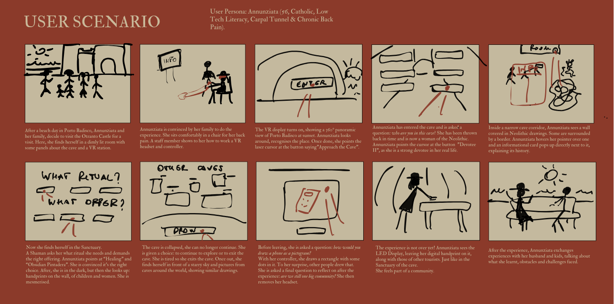
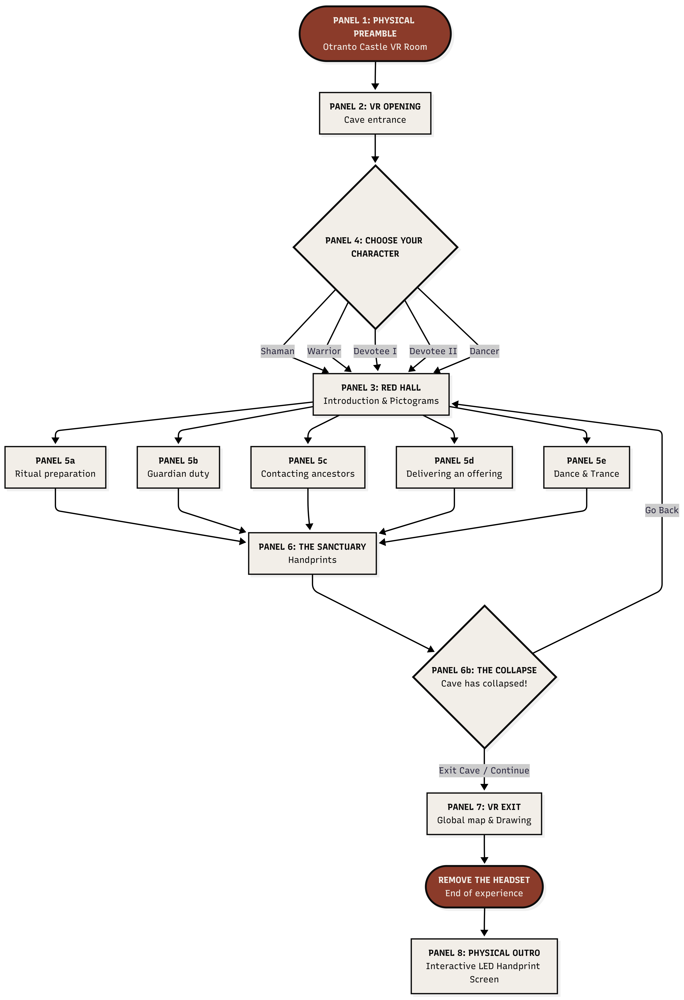
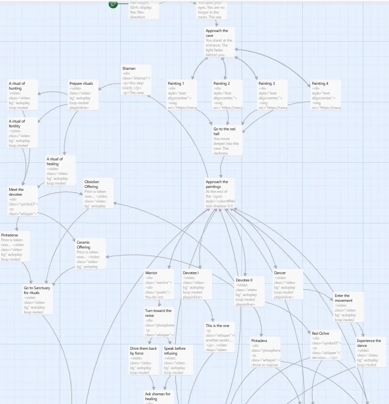

The Museum
& its Collection
The Grotta dei Cervi (Cave of the Deer) of Porto Badisco, near Otranto in Puglia, is one of the most significant Neolithic cave sanctuaries in Europe. Discovered in 1970, it extends for over 700 metres and features three main corridors divided into twelve zones, with paintings gathered in 81 groups. The pictograms were made with pigments derived from subfossil guano (brilliant brown), clays and ground bones (yellowish brown), and ochre (red). Most images are abstract — spirals, sinuous lines, complex motifs — while figurative scenes depict deer, hunters with bows, and dogs.
The cave has been closed to the public since 1987. Human presence — breath, warmth, light — would destroy the fragile microclimate preserving the paintings. Only researchers with special authorisation may enter.
3D Documentation
A high-resolution, full-colour 3D model of the cave was developed starting in 2005 by the University of Salento, led by Professor Virginia Valzano, in collaboration with the Visual Information Technology Group of the IIT-NRC (Canada) and CASPUR (Rome). The acquisition took place under extreme conditions — high humidity, difficult access — and required specialised equipment. The resulting model is a milestone: unmatched resolution, never previously achieved for a cave site of this scale. As of September 2025, a permanent exhibition at the Castello Aragonese di Otranto includes a 3D digital twin of Corridor 2, the corridor containing the most significant pictograms.
Institutional Goals
Let more people know about this cultural heritage treasure — largely unknown due to its inaccessibility — and increase its national and international visibility.
Allow visitors to experience the cave without entering it, preserving the humid environment that keeps the pictograms intact and well-preserved.
Create a virtual environment with no barriers — accessible to everyone regardless of age, language, cultural background or physical limitation.
Concentration · Curiosity · Embodiment · Storytelling. Education happens through immersion, not instruction. Culture triggers emotion; emotion drives action.
Star Assets
The Shaman pictogram — the most iconographically charged image in the cave — as well as the full pictogram ensemble, the mystery of ritual practice, and the 3D model by Professor Valzano are the core star assets. The ability to virtually access a location inaccessible to almost every living person is itself the most powerful asset of all.
The Visitors
The audience is intentionally as wide as the human community that once inhabited the cave — and as diverse as the one that shared a universal visual language across prehistoric sites worldwide. Our primary audience groups are tourists visiting Otranto and Puglia, cultural heritage enthusiasts, school groups, and locals with a connection to the territory.
The mystery and inaccessibility of the cave. The fact that digital means are the only way to explore it. The richness of Neolithic pictograms representing the beliefs of a community six thousand years ago.
Physical inaccessibility of the cave. VR side effects (motion sickness, eye strain). Age restrictions: headsets from age 13. Educational gap: not everyone knows Italian Neolithics.
Basic familiarity with digital devices. Mixed reality and casual gaming literacy assumed. Staff onboarding removes barriers for first-time VR users.
4 VR headsets + controllers. Interactive LED display for handprints. Chairs for seated usability. Physical infographic panels at the preamble station.
User Persona — Annunziata
56 years old · Catholic · Low tech literacy · Carpal tunnel · Chronic back pain
After a beach day at Porto Badisco, Annunziata visits the Otranto Castle with her family. She sits comfortably in a chair, a staff member shows her the VR controller. The experience opens on a 360° panorama of Porto Badisco at sunset — she recognises the place. She chooses Devotee II, as she is a strong devotee in real life. In the Sanctuary, she is mesmerised by the handprints on the wall, children and women. She leaves her own handprint on the LED display. Afterward, she exchanges the experience with her husband and kids.

The Core Idea
A multi-character VR experience where visitors physically descend into darkness just as the Neolithic people did thousands of years ago. Each visitor inhabits a role inside the cave and discovers its art through that lens. Education happens through immersion, not instruction. The user journey is the descent into darkness.
The Problems We Are Facing
The Grotta dei Cervi has been inaccessible since 1987, making it impossible to visit directly — even for most researchers. It is largely unknown outside academic and local circles. The experience risks feeling like a passive museum visit rather than something genuinely immersive. VR as a medium presents accessibility barriers: physical discomfort, low digital literacy in older audiences, the need for trained staff.
How We Face Them
By hosting the experience at the Castello Aragonese di Otranto — already a heritage destination — we meet the audience where they already are. A branching narrative with five character roles allows each visitor to engage at their own pace. Groups are encouraged to choose different characters and compare experiences afterward, creating social motivation. The closing handprint activity bridges the ancient and contemporary, making the experience personally relevant regardless of background.
The Five Roles
Museological Approach
The project is grounded in interpretive museology, guided by Freeman Tilden's six principles (Interpreting Our Heritage, 1957). Successful interpretation requires a robust mix of media and sensory experiences designed to stimulate curiosity, challenge intellect, and appeal to emotion. Every design decision begins with the visitor — not the collection. The cave's pictograms, zones, and artifacts are always encountered through the lens of a specific role, motivation, and emotional state.
Case Studies & Inspirations
The VR experience at the Rafa Nadal Academy Museum (Manacor, Mallorca) demonstrated how VR transforms passive observation into active participation. The DDR Museum (Berlin) showed how analog objects and interactive displays can be combined to explain history through touch and embodiment. Both were experienced firsthand by team members.
Key Themes
Phosphenic art and altered states of consciousness. The Shaman figure as organiser of symbolic life. The Mother Goddess — recurring female figure linked to fertility, trans-Adriatic cultural exchange. The ritual community — five interdependent roles reconstructing a full Neolithic ceremony. The universality of abstract visual language: the same geometric forms (spirals, concentric circles, zigzags) appear from California to Colombia, suggesting a neurological rather than purely cultural origin.
Community is a central topic of this project: the whole point is to remind people that we live in communities, that we have duties to them and draw strength from them — and that we share the same basic concepts with other communities across time and space.
Needs & MoSCoW
We used the MoSCoW framework to distinguish between what the project absolutely needs, what would improve it, what is possible but non-essential, and what is explicitly out of scope. Requirements were identified by starting from PACT data, then transforming it into information and finally into requirements.
- Historically and archaeologically accurate content throughout
- VR headsets in an atmospherically lit room at the Castello Aragonese
- Five playable character roles
- 3D model developed by Professor Valzano
- Physical preamble station with infographics and accessibility warnings
- Staff presence for onboarding and headset fitting
- Experience usable from a seated position
- VR side-effect and epilepsy warnings before the experience
- Colorblind-safe palette, subtitles, and accessible features
- Interactive LED handprint display at exit
- Multilingual support (minimum Italian and English)
- Closing pictogram drawing activity with global visitor comparison
- Postcard takeaway with QR code linking to the website
- Ambient cave soundscape — dripping water, echoes
- Multiplayer layer for group visitors inside the cave simultaneously
- Adjustable text size for visual impairments
- Additional world cave comparisons beyond those currently mapped
- Kids' version — not a diluted adult version, but purpose-built following Tilden's Interpretative Principles
- Soft background ambient sound (constant but not distracting)
- Physical access to the Grotta dei Cervi
- Direct photography or reproduction of pictograms from the cave
- A fully autonomous experience without any staff presence
- Graphic violence or explicit representation in any version
PACT Analysis

People
International and domestic tourists visiting Otranto and Puglia, cultural heritage enthusiasts, and locals with a connection to the territory. A broad audience — diverse in age, education, cultural background and familiarity with prehistoric art. Groups need a shared social hook; individuals need a personal emotional journey.
Activities
Each full session lasts approximately 30–45 minutes. It runs during museum opening hours in scheduled slots to manage 4 headsets. Peak moments will be tourist season in summer and school visits in spring. The experience is individual inside VR; the character selection mechanic encourages groups to choose different roles for comparison afterward.
Context
A dim, atmospherically lit room inside the Otranto Castle. The historic stone building may have ambient echoing noise. The space accommodates 4 visitors simultaneously with enough room to move safely wearing headsets. Full accessibility is a hard requirement: colorblind-friendly interface, subtitles and visual cues for deaf users, seated usability for mobility-impaired visitors.
Technologies
3D Photogrammetry (cave interior) · 360° panorama at sunset (intro) · Real-time 2D animation (for the fresh painting effect). VR headsets for the main experience. A shared screen displaying the live archive of visitor pictograms. Physical infographic panels at the preamble station. LED display for handprints. The core VR experience runs on a local network; the website is fully online.
The Experience
from the Inside
User Journey
Experience Flow

I. The Opening: The Liminal Threshold
The journey begins at the West entrance of the cave during a Salento sunset. A 360° panorama of the Apulian sea — beautiful and brief. Something draws the visitor into the dark mouth of the cave. A single question defines the journey: Who are you?
II. Inside the Cave
The educational content — descriptions of paintings, historical context, significance of symbols — is the same for all characters. What changes is the experience. The Shaman interprets paintings as phosphenic visions. The Devotee II learns about Neolithic artifacts by choosing the correct votive offering for their petition. The Dancer experiences the cave through movement and sound. A 3D model of Professor Valzano serves as academic anchor throughout.
III. The Finale: Intertextuality & The Sanctuary
At the heart of the cave, the narrative expands globally. The visitor sees paintings linked to identical symbols found in caves worldwide — from California to Colombia — reinforcing the project's thesis: this visual language is a universal human trait. A moment of absolute darkness and silence recreates the sensory deprivation that ancient shamans used to trigger phosphenic imagery.
IV. The Physical Outro: The Collective Handprint
The visitor removes the headset and finds a touch-reactive LED screen in the Otranto Castle room. It displays a luminous cloud of handprints left by previous visitors — pale ochre silhouettes on dark background, like the handprints on the ceiling of the Sanctuary. By placing their own hand on the screen, the visitor's print is added instantly. This final gesture bridges the virtual Neolithic past and the physical present.
Storyboard
The storyboard maps the narrative arc for all five character paths across 8 panels: Physical Preamble → VR Opening → Red Hall → Character Paths (5a–5e) → The Sanctuary → The Collapse → VR Exit → Physical Outro.

Twine Narrative Prototype
An interactive narrative prototype was built in Twine (Harlowe format) to model the branching logic, decision-making dynamics, and the emotional arc of the experience. The prototype implements all five character paths, with looping video backgrounds, CSS animations, and image-based scene backgrounds drawn from archival photographs of the cave's pictograms.

Low-Fidelity Wireframes
Low-fidelity wireframes were developed in Figma across two pages. Page A (External Interface) covers E1 (pre-VR informational panel) and E2 (level selection: Kids / Light / Full). Page B (VR + Physical) maps V1 (sunset entrance + character selection), V2 (Red Hall), V3a–e (five character paths), V4 (Sanctuary), V5 (global phosphenic map), and P1 (physical LED handprint screen).
High-Fidelity Prototype
The high-fidelity prototype was built in Figma by Claudia Romanello. It uses real photographic backgrounds from the Grotta dei Cervi, the project's terracotta/ochre palette, bilingual labels (English / Italian), and photo-realistic representations of the votive artifacts (pintadera, Mother Goddess artifact, anthropomorphic pintadera). The prototype is fully interactive and navigable.